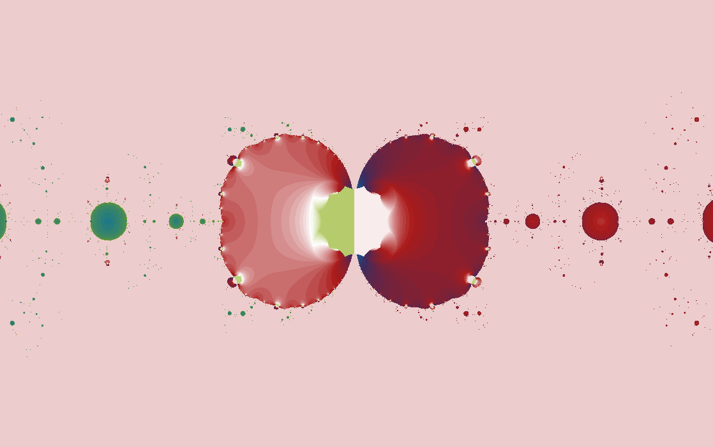

Script gallery
Newton \(\tan(z)-z=0\)
A root-finding map near the poles of tangent.
Tangent is a wave with cliffs. Its poles make Newton's method jump through the complex plane, giving this script sharper partitions than the sine and cosine variants.

What to try first
Look for sharp vertical changes. Those often reflect tangent's pole structure.
Zoom near a color boundary and compare it with the smoother center of a basin.
Visit the fixed-point tangent page afterward to see tangent used in a different numerical story.
Mathematical notes
The tangent Newton step
The script solves \(f(z)=\tan(z)-z\). Since the derivative of \(\tan(z)\) is \(\sec^2(z)\), the Newton correction uses \(f'(z)=\sec^2(z)-1\) in the usual formula. Tangent's poles strongly influence the basin geometry.